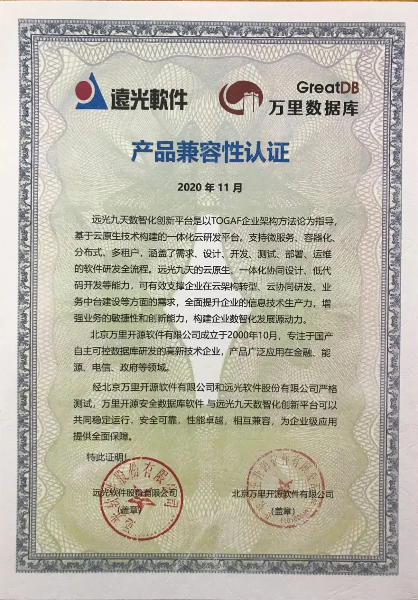
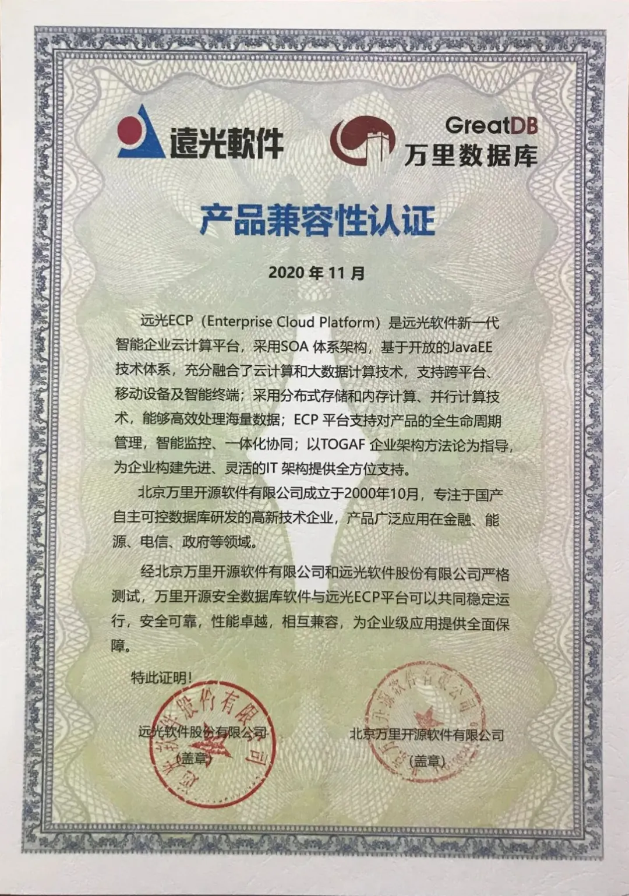
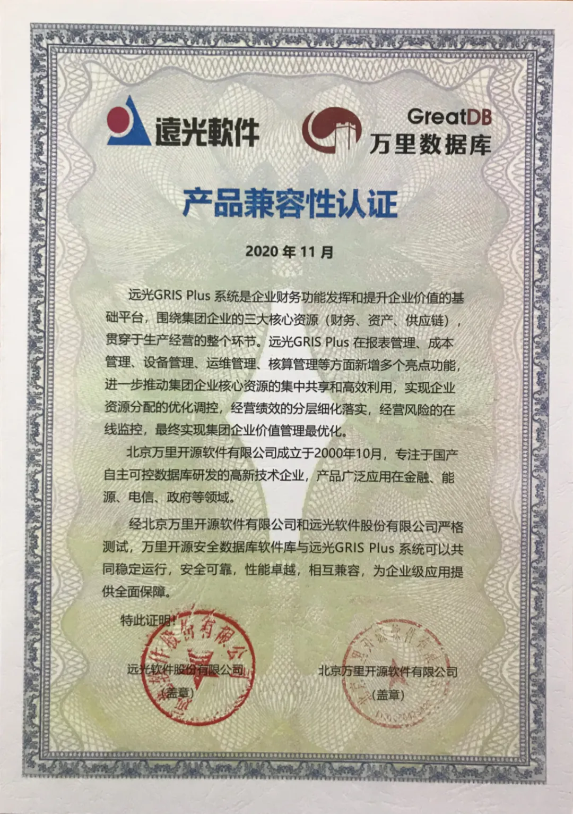

生态 | 共推能源行业国产化，万里数据库与远光软件完成兼容适配
近日，经北京万里开源软件有限公司和远光软件股份有限公司（简称“远光软件”）严格测试，万里开源安全数据库软件与远光软件的九天数智化创新平台、ECP平台、GRIS Plus 系统可以共同稳定运行，安全可靠，性能卓越，相互兼容，为企业级应用提供全面保障。
产品兼容性认证



关于远光软件
远光软件是国内主流的企业管理、能源互联和社会服务信息技术、产品和服务提供商，积极探索大数据、人工智能、物联网、区块链等新兴技术在企业管理等领域中的创新应用，以场景为核心，加速落地应用研发，推动管理信息化服务生态体系建设与升级。
远光九天数智化创新平台
远光九天数智化创新平台是基于云原生技术构建的一体化云研发平台，可有效支撑企业在云架构转型、云协同研发、业务中台建设等方面的需求，全面提升企业的信息技术生产力，增强业务的敏捷性和创新能力，构建企业数智化发展源动力。
远光ECP平台
远光ECP（Enterprise Cloud Platform）是远光软件新一代智能企业云计算平台，支持对产品的全生命周期管理，智能监控、一体化协同；以TOGAF 企业架构方法论为指导，为企业构建先进、灵活的IT 架构提供全方位支持。
远光GRIS Plus 系统
远光GRIS Plus 系统是企业财务功能发挥和提升企业价值的基础平台，围绕集团企业的三大核心资源（财务、资产、供应链），贯穿于生产经营的整个环节。
关于万里数据库
万里开源安全数据库软件是北京万里开源软件有限公司推出的新一代原生分布式关系型数据库软件，具有动态扩展、数据强一致、集群高可用等众多企业级特性，满足业务高并发、高扩展性、高安全性等需求，已广泛应用在金融、能源、电信、政府等领域。
展望
此次兼容性认证，标志着万里数据库可以很好地适配远光软件多个平台，具备良好的适配性，有利于双方为能源等行业客户提供优质的产品和服务，为企业的数字化、智能化转型升级提供了有力支撑，助力信息技术国产化。
推荐阅读
万里数据库简介
万里数据库是北京万里开源软件有限公司自主研发的新一代分布式数据库，经过10余年的应用验证，在功能、性能、稳定性、易用性等方面均处于行业领先水平，历经500多个业务场景的锤炼，已广泛应用于金融、能源、通信、政府、交通等多个行业。


扫码二维码
关注公众号